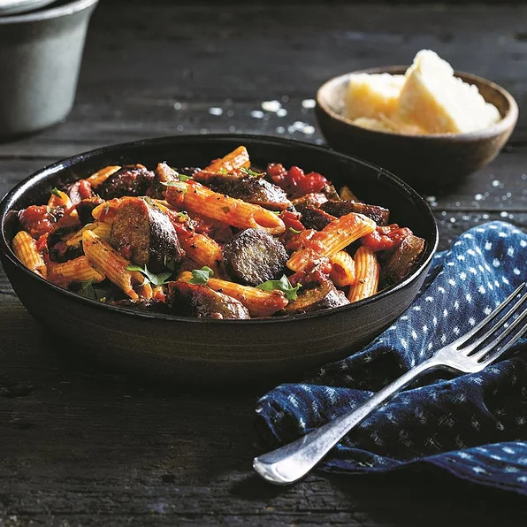

Italian Sausage Penne

Ingredients
- 1 (16 ounce) package penne pasta
- 1 (19 ounce) package Johnsonville® Mild Italian Sausage Links, coin-sliced
- 1 tablespoon olive oil
- 1 medium green bell pepper, julienned
- 1 medium red bell pepper, julienned
- 1 medium onion, halved and sliced
- 1 clove garlic, minced
- 1 (28 ounce) jar marinara sauce, heated
Directions
- Cook pasta according to package directions.
- In skillet, brown sausage in oil for 3-4 minutes. Add peppers, onion and garlic.
Continue to cook until vegetables are tender.
- Divide prepared pasta in bowls, top with marinara sauce and sausage vegetable mixture.